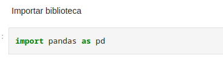

Projeto de pokedex utilizando conceitos básicos de web-dev
Bem-vindo ao mundo do Ethereum e Web3! Este é um modelo beta para o desenvolvimento do Solidity no Replit. Solidity é a linguagem usada para criar Smart Contracts, que são programas executados no Ethereum Blockchain.
Este projeto demonstra um caso de uso básico de HARDHAT. Ele vem com um contrato de amostra, um teste para esse contrato e um script que implanta esse contrato.
Teste de funcionalidades da biblioteca Pandas utilizando a ferramenta Jupyter Notebooks
